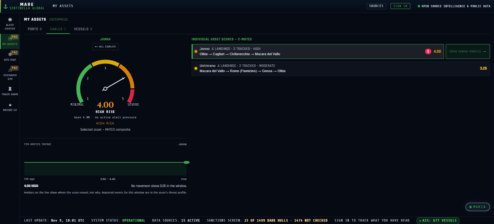

Protecting European Maritime Critical Infrastructure, one port, one cable, one vessel at a time
One threat exposure score across European ports, subsea cables, and vessels, with the alerts and evidence to act on it.
Beyond Monitoring. Ahead of Threats.
See How Ports, Cables, and Vessels
Are Protected
Try it. Pick an asset, move a pillar, open an alert. Demo data.
A look inside our Intelligence Terminal. Hover or click a screen to see more.
Ports · P-MHTES
Port of Piraeus · live profile, then the 30-day summary
Every port gets a threat profile and a four-pillar score.
- Four pillars. Strategic value, foreign actor presence, illicit & grey-zone activity, cyber & infrastructure vulnerability.
- Live now. Four threat lanes (strikes & conflict, approaches, cyber & OT, enforcement & migration), with the nearest vessels listed first.
- 30-day summary. Port Risk Signal, alert ledger and CSV export.
Subsea Cables · C-MHTES
Medusa cable system
Every cable gets a four-pillar score and a profile along its route.
- Four pillars. Strategic value, maritime activity pressure, infrastructure exposure, cyber & infrastructure vulnerability.
- Route profile. A strip by kilometre, a depth profile against the 200 m anchor-and-trawl line, and vessels over the cable.
- Cable watch. Loiters, earthquakes within 50 km and a Sentinel-1 pass search.
Vessels · V-MHTES
Ops Map · live AIS and signal density
Vessels get a four-pillar score, and dark vessels are flagged.
- Four pillars. Route strategic value, foreign actor presence, operational exposure, cyber & infrastructure vulnerability.
- Dark vessels. AIS silences are detected, with confidence reduced in GNSS-degraded water.
- AIS spoofing. Impossible speeds and contradictory tracks are cross-checked against a GNSS survey.
Convergence Alerts

Barcelona · two threat types converging
Different threat types at one place within 72 hours are flagged as a convergence.
- Attribution distance. Each threat type is listed with its own.
- Live zones. Shown in the Alert Center and on the Ops Map.
- An alert, not a score. Convergence does not change an asset’s score.
Disinformation
Eastern Mediterranean · one flagged claim
Disinformation Watch tracks maritime claims and fact-checks, and draws them as zones on the Ops Map.
- Alert Center. A 90-day log of maritime fact-checks and reporting, read in 10 languages.
- Zones on the map. One click shows each zone on the Ops Map, with the source a click away.
- Where it points. A zone marks where a claim points, not where it happened. It is not an MHTES score.
Scenario Simulator
Scenario Simulator · GPS jamming at the Strait of Gibraltar
A deterministic trade-disruption engine over a Mediterranean lane graph.
- Presets or your own. Six presets, such as a Suez Canal closure or a Piraeus ransomware lockdown, or describe a scenario in plain language.
- Set the event. Pick an event type, severity and duration.
- See the impact. A forecast of freight rates and transit times, diverted trade flows, shifts in asset scores and operator advisories.
My Assets · Enterprise

My Assets · ports, cables and vessels
A roster of your own ports, cables and vessels, scored together.
- One Cumulative Asset Score, with a 72-hour history and projection.
- Asset by asset. Separate tabs for ports, cables and vessels, each asset scored individually.
- Full threat profile. Open any asset for a live view and a 30-day summary, with CSV export.
Trade Game
Trade Game · preseason auction draft
A 12-week season on the real Mediterranean basin, against one rival: the Levant Syndicate.
- Draft eight slots with $2,000M of GeoCap, bidding at auction against the Syndicate.
- Weekly disruption cards. Each week a simulated card scores both fleets.
- No cash value. The higher point total wins the week.
Every port and cable gets its own score. Select a marker.
Illustrative demo data.
Four pillars, one 0–5 score. Move the sliders.
Illustrative. A score is a prompt to look closer, not a verdict.
One feed. When unrelated signals stack up in one place, it flags convergence.
Simulated alerts.
Four pillars. Mapped to NIS2 and CER.
Every score is four equally weighted, cited pillars.
Strategic Value
How much depends on the asset.
Foreign Actor Presence
Who is involved, and from where.
Activity & Exposure
Grey-zone activity and physical exposure.
Cyber Vulnerability
Systems, OT and landing stations.
Sentinella Mare supplies evidence for these obligations; it does not by itself make an entity compliant.
Built for the operators NIS2 and CER name.
Your own ports, cables and vessels, scored together.
- Everything in Pro
- My Assets: your portfolio
- Deep simulation
- SSO, team seats, SLA
Individual plans
Analysts & professional users: individual operators, analysts, shipping, logistics & cruise planners, researchers.
Basic
The live Alert Center: real-time maritime threat monitoring for anyone watching the basin.
- Live intelligence feed with operational disruption & hybrid-threat alerts
- Port Status Board: live Cumulative Asset Scoring (CAS) & 72-hour trends
- Port surveillance dock: live cameras
- Dark-vessel alerts & route corridor risk estimates
- Hybrid threat convergence detection (disinformation, illicit activity, cyber, etc.)
Pro
The full operational picture for professional shipping, logistics, and cruise planners.
- Everything in Basic
- MARIA unlimited: voice + chat with full Alert Center context
- Operations Map: layered asset and threat picture in 2D
- Live asset intel feed with geolocated map markers
- Scenario Simulator: natural-language what-if modelling & impact projections